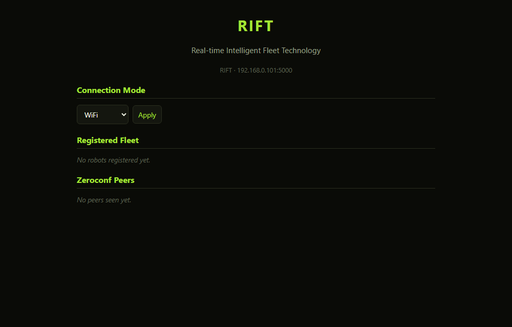

Overview
One hub for the whole fleet
Fleet dashboard
Real-time monitoring and control of every robot from a single interface.
Protocol bridging
Translates commands between PC, Android and the robots' microcontrollers.
Autoconnect
mDNS publishing and browsing (_rift._tcp), so hubs, robots and DREAM find each other.
Telemetry
Live data from the fleet's IMU and ultrasonic sensors.
NORA as the hub
Robots and controllers join NORA's access point; RIFT keeps her fleet-authority heartbeat going.
Eight implementations
Python, Go, Rust, F#, Julia, C++, Unity and Android hubs all speak the same protocol.
Fleet
Who lives where
Every member of the ecosystem has its own port:
| Member | Port | What it is |
|---|---|---|
| RIFT | 5000 | This fleet hub |
| DREAM | 5001 | The AI companion: her own site, DREAM on your phone |
| ComCentre | 5009 | DREAM’s dashboard and API (HTTPS) |
| NORA | 5002 | ESP32 mecanum robot and WiFi hub |
| KIDA-00 | 5003 | Raspberry Pi 3 tank |
| KIDA-01 | 5004 | Raspberry Pi 5 + Hailo tank |
| WHIP | 5005 | 18-DOF hexapod |
| MILA | 5010 | ESP8266 mini tank |
| ARM | 5011 | Robot arm |
Talk
The robots chat, and RIFT keeps the diary
Every 25–60 s RIFT picks two robots that can talk and has the first say a phrase and the second answer. Every phrase is a Brainfuck program that prints its words — hello is ++++++++[>+++++++++++++<-]>.+. → hi — and a robot says it by beeping the program on its buzzer, one tone per symbol, in its own voice. RIFT runs the conversations and asks each robot to speak with GET /chirp?u=<0-13> (phrases 0–6, replies 7–13).
Phrasebook
Fleet/brainfuck_talk.py builds the shortest program it can for each phrase and reply, checks them with an interpreter, and writes the same talk_bf.h into every robot’s sketch.
Personalities
Each robot has its own chattiness and favourite phrases, and a mood that drifts with the time of day and how its chats go.
Mission log
A diary in mission days: who came online or went quiet, who said what to whom, whose mood changed. Robots can add entries with POST /mission.
GET /talk returns the conversation log and moods, POST /talk starts one now, GET /mission returns the diary. The dashboard shows both, and every robot in its Fleet list has an Open button for its own web page.
Run
Start the reference hub
app.py runs the fleet registry, mDNS discovery (including browsing for ComCentre), the NORA integration threads, the conversations and the mission log in one Python process, with no compiling. On Windows run.bat does it all: it sets up venv and installs the requirements the first time, then starts app.py.
> run.bat
Or by hand (Linux / macOS):
$ python3 -m venv venv $ source venv/bin/activate $ pip install --upgrade pip $ pip install -r requirements.txt $ python app.py
One hub per machine. Every hub speaks the same /robots + /register protocol on port 5000, so run one or another, not several at once.
Native C++ hub
PC App/App is the native fleet-registry server for Windows and Linux. build.sh installs the dev packages it needs (asking for sudo), then builds into PC App/App/bin/.
$ ./build.sh $ ./run_server.sh
Hubs
The same hub, your language
PC App/Go, Rust, FSharp (.NET 8) and Julia are complete, cross-platform re-implementations of app.py. Each has the registry (/register, /robots, /ping), /peers with mDNS, the WiFi/Bluetooth /mode and NORA heartbeat, the same dashboard, and a --scan subnet scanner.
| Language | Launch | Needs |
|---|---|---|
| Go | run_server_go.bat / ./run_server_go.sh | Go |
| Rust | run_server_rust.bat / ./run_server_rust.sh | Rust |
| F# | run_server_fsharp.bat / ./run_server_fsharp.sh | .NET 8 SDK |
| Julia | run_server_julia.bat / ./run_server_julia.sh | Julia |
$ ./run_server_go.sh # start the hub on :5000 $ ./run_server_rust.sh --scan # scan this subnet for hubs and robots $ ./run_server_fsharp.sh --name RIFT2 --port 5010 --no-internet-share
Options (all four): --name, --port, --nora-host, --nora-port, --heartbeat-secs, --ttl-secs, --no-heartbeat, --no-mdns, --no-internet-share, --root, --scan.
C++, Unity and Android
C++
PC App/App: Windows and Linux, no Avahi, curl or nlohmann needed. Windows links statically, so the exe runs from any shell.
Unity
Unity App/RIFT/Assets/Rift: a hub that starts on scene load, with an on-screen panel for name, port and NORA settings.
Android
Android App/: Kotlin on NanoHTTPD, with a foreground service, activity and Bluetooth link to NORA.
Verified: every hub passes the same 32-check protocol suite and interoperates with the others over mDNS and heartbeats. Not yet run on real hardware: Linux-only paths, Bluetooth, internet sharing and the Android service.
Screens
The controllers
Captured without a robot connected, so live values show their offline state.
